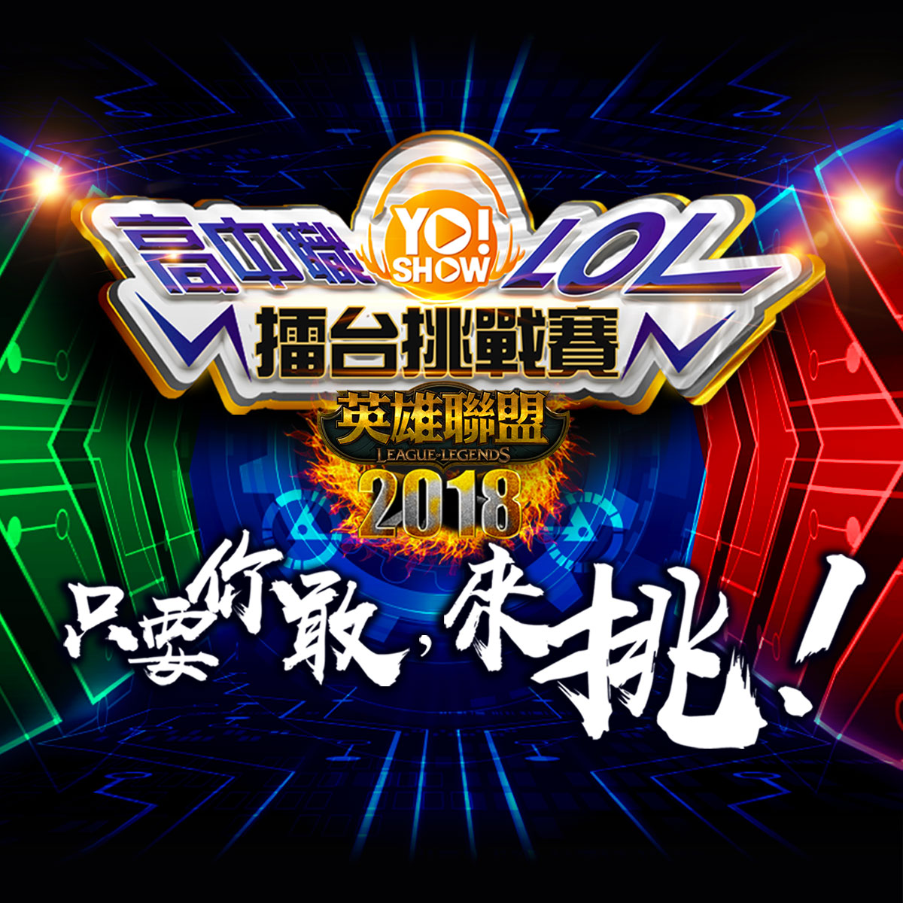
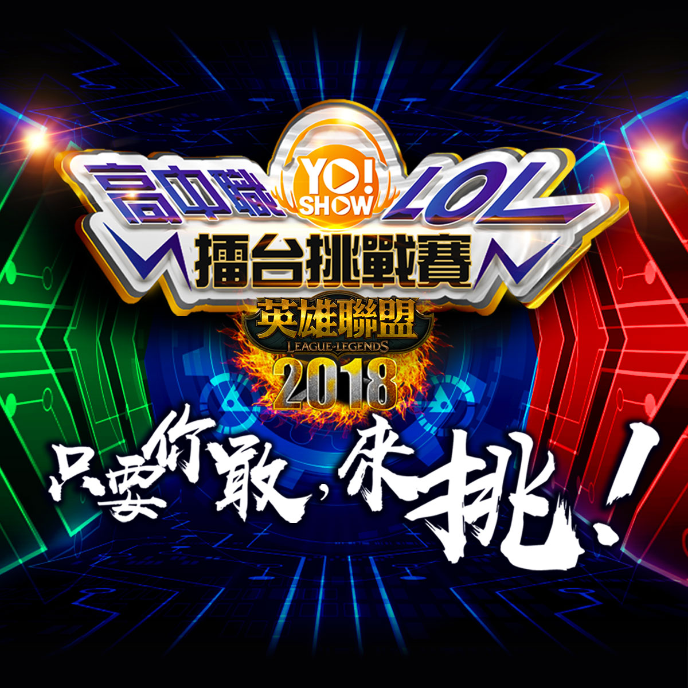

比賽規章
規章下載- 《2018 Yo!Show全國高中職LOL擂台挑戰賽》將於線上選出8強賽進入線下實體賽。
- 比賽規則：採5對5正規比賽規則
- 比賽地圖：5 對 5 （召喚峽谷）。
- 比賽伺服器與版本：台港澳伺服器，英雄聯盟最新版本（台港澳版本）
- 比賽模式：5 v 5 電競選角，藍紫方於賽程表公佈時一併決定。
- 比賽進行時，參賽選手不可私自開台實況，如遭檢舉則取消該隊資格
- 比賽帳號：所有比賽選手均使用個人帳號，遊戲等級 30 等，最少需擁有 20 隻英雄。
- 允許觀察者模式：只允許組隊房間內的成員 (第二輪起需由藍方邀請OB或裁判進入觀戰模式)
- 比賽勝利判定標準：
- 摧毀敵方水晶主堡或迫使對方投降方獲勝。
- 線上約戰請雙方隊伍於約定好的時間前 10 分鐘登入遊戲並由藍方完成開啟對戰房，若因遇改版或更新無法準時進入對戰房者，視同遲到處理。
- 線上約戰結束後，勝方須將整個勝利的結算畫面（含雙方選手名稱與勝利文字）進行截圖並上傳至官方賽程表頁面。
- 線下賽雙方選手需於比賽開始前 30 分鐘至比賽現場檢錄及測試電腦，所有參賽隊伍若遲到 10 分鐘或先發不足五人，則官方人員有權給予判此隊伍棄權。